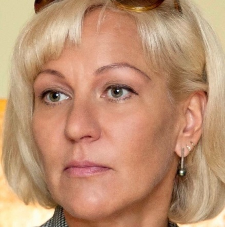

Aktuell
- 19 Mai-09 Juni
Biel - 21 Mai Biel
- 02 Juni Biel
- 03 Juni Moutier
ARTWEIN
- 27 Mai Moutier
Cave St-Germain - 03 Juni Biel
- 05 Juni St.Petersinsel
Galerie Residenz au Lac
Olga Kamenskaya
 Fotografin, RusslandDas Hauptthema ihrer Arbeit ist das Verhältnis zwischen Mensch und Natur. Mit einer Taucherausrüstung und einer Kamera war Olga Kamenskaya auf allen Kontinenten. Sie machte unglaubliche Aufnahmen der Unterwasserwelt vom Weissen Meer, der Barentssee und vor der Küste Grönlands. Am Baikalsee war sie mehr als 20 Mal und dieser wurde für sie zu einem unerschöpflichen Objekt ihrer Arbeit.
"... Ich komme zum Baikal zurück und fotografiere immer das Selbe, in der Hoffnung, dass es mir gelingt, eine Aufnahme zu machen, die meine Gefühle darstellt und mich beruhigen kann. Aber den Baikal kann man nicht in seiner vollen Tiefe abbilden ..."
Das Projekt von Olga Kamenskaya "Baikal. Königreich von Wasser und Eis" wurde dem legendären Baikalsee gewidmet. Der Baikalsee ist ein UNESCO Welterbe und umfasst zwanzig Prozent der weltweiten Trinkwasserreserven.
Zur Fotografie
Der Schwerpunkt der Ausstellung ist die Unterwasserwelt und die speziellen Eisformationen vom grössten See des Planeten. Die Natur des Baikalsees bildet eine Sinfonie aus Wasser und Eis. Die Ausstellung begleitet die Dokumentation "Jenseits des Eises". Für die Ausstellung hat Olga Kamenskaya einige ihrer Arbeiten vom Baikalsee über Wasser und unter Eis gewählt, die die Arbeiten von Michel Roggo ergänzen und zusammen bilden sie eine unglaubliche künstlerische Komposition bilden.